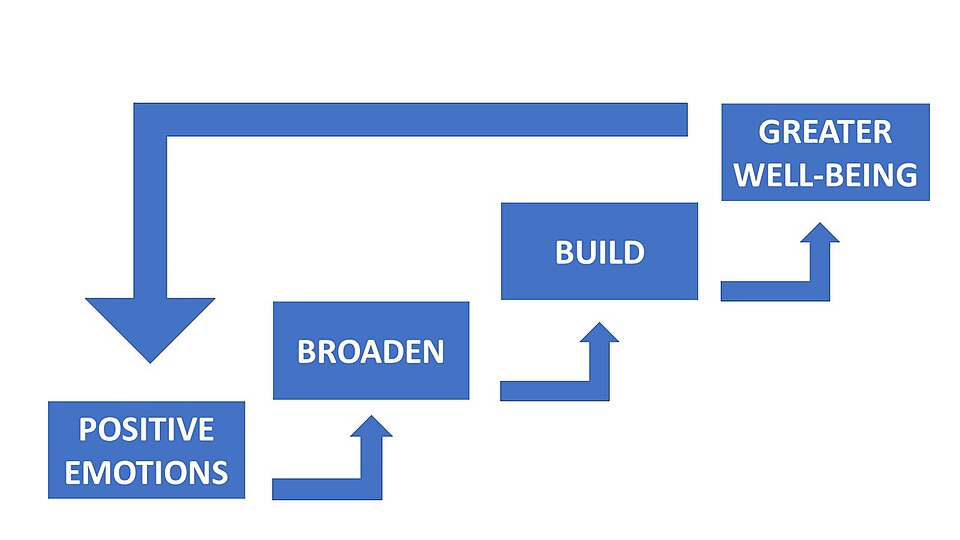

The Big Picture: Feeling It All
We've explored how we are motivated to act, but how do we feel while we are acting? In this final topic of Unit 4, we examine emotion. Emotion, or affect, is a complex psychological process that is distinguished from reasoning or knowledge. Emotions reflect internal and external factors affecting an individual.
1.The Mechanisms of Emotion
Psychologists have long debated exactly how and in what order we experience emotions. When you encounter an emotional stimulus, does your body react first, or do you feel the emotion first? Here are the primary theories that explain these mechanisms:
A quick note: You are not expected to know the names of the researchers who developed these theories. They are included since most textbooks still mention them by name. The AP curriculum states you only need to know these theories by the title listed below.
- SuccessionBody First, Emotion Second
- The James-Lange Theory proposes that our physiological response happens first, and our experience of emotion follows in succession. For example, you see a bear, your heart starts pounding (body response), and because of that physical change, you then feel afraid (emotion).
- SimultaneousBody and Emotion Together
- The Cannon-Bard Theory argues that the physical arousal and the subjective experience of emotion occur simultaneously. In this view, seeing the bear triggers your pounding heart and the feeling of fear at the exact same time; one does not cause the other.
- The Role of CognitionTwo-Factor / Cognitive Label Theory
- The Schachter-Singer Two-Factor Theory brings the brain's interpretation into the mix. It proposes that to experience a conscious emotion, you must have two things: physical arousal and a cognitive label. You feel your heart pounding, you cognitively label the situation as "dangerous" because of the bear, and that label combined with the physical arousal creates the emotion of fear.
- The Facial-Feedback Hypothesis
- This concept connects directly back to the idea of succession. It suggests that the physical movement of your facial muscles (like smiling or frowning) actually happens before and directly influences your experience of emotion, occurring even before your brain completes its Cognitive Appraisal, the mental process of evaluating a situation to determine its emotional significance. For instance, if you force yourself to smile, that physical bodily response happens first, sending signals to your brain that subsequently trigger the actual emotion of happiness. Research on this theory has produced mixed results.
2.Broaden-and-Build Theory
Emotions don't just happen to us; they serve an evolutionary and cognitive purpose. The broaden-and-build theory of emotion proposes that positive emotional experiences tend to broaden awareness and encourage new actions and thoughts. When we are happy or joyful, we are more likely to explore, play, and connect with others. Conversely, negative emotions tend to reduce awareness and narrow thinking and action, which helps us focus on immediate threats (like escaping danger) but limits our creativity.

3.Expressing Emotion: Culture and Norms
Do people all over the world experience and express emotions the same way? Research has explored whether the expression of emotions is universally common.
- Universal Emotions: Some emotions that may be commonly experienced across cultures include anger, disgust, sadness, happiness, surprise, and fear. However, research on the universality of emotions shows mixed results.
- Display Rules are the culturally learned norms that govern when, where, and how it's appropriate to express a given emotion. Along with Elicitors (the specific events or stimuli that trigger an emotional response), display rules for emotional expression can differ among cultures. These rules and elicitors may regulate how people from different genders, ages, or socioeconomic classes within a culture can display and interpret emotions. Example: In some cultures, it is acceptable for men to express anger openly, while crying may be discouraged.
4.Don't Trip Up! (AP Exam Exclusions)
⚠️ Out of Scope - Specific Theory Names: In most textbooks you will likely see breakdowns of the theories of emotions by their actual names: James-Lange Theory, Cannon-Bard Theory, and Schachter-Singer Two-Factor Theory. Do not memorize these names! The College Board explicitly states: Specific names of theories of emotion are outside the scope of the AP Psychology Exam. Instead, focus purely on the mechanisms (e.g., understanding the debate between physiological response happening in succession vs. simultaneously).
5.Key Terms in This Topic
6.Practice This Topic
Test yourself on exactly what you just read, then mix it up with games and puzzles. The numbers on each button show how much material is waiting for you.
The same self-check questions that close your guided notes. Find out whether the theories and expression of emotion stuck.
Start Quick Check →Flip through the key terms from this topic, including the James-Lange, Cannon-Bard, and two-factor theories.
Open the deck →AP-style multiple choice on theories of emotion, cognitive appraisal, and display rules, with an explanation after every answer.
Take the quiz →You've reached the end of Unit 4. Mix it up to review the whole unit before you move on.